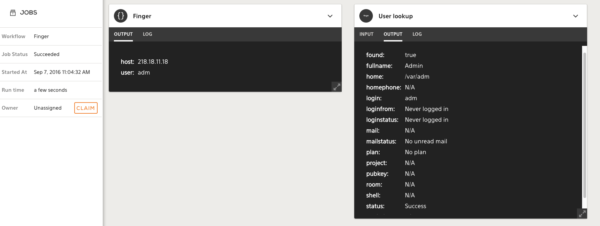

SDK Guide¶
Writing your Plugin¶
The following sections document things you need to know to develop quality plugins.
Version¶
We have Python 2.7 and 3.4 SDK images.
In your plugins Dockerfile, you can change the tag to match the version of python. Use python-plugin:0.2 for Python 2.7; python-plugin:0.3 for 3.4:
$ head -n 1 Dockerfile
FROM komand/python-plugin:0.2
Plugin Generation¶
As decribed in the SDK Spec document, plugin skeletons are generated by komand plugin generate python plugin.spec.yaml. Regenerating the skeleton by running the command will overwrite the existing configuration so be sure to save your work. This usually means copying the code you added e.g. in the run method to a different location.
If you decide to modify your plugin’s scheme, by editing plugin.spec.yaml, you’ll need to regenerate the plugin skeleton or you can manually add the JSON schema to the appropriate files.
For example, say you decide to add a new input variable called option to the finger action in the finger plugin. You need to edit Input class like so.
--- code_examples/python/sdk_plugin_generation.old
+++ code_examples/python/sdk_plugin_generation.new
@@ -3,6 +3,11 @@
"type": "string",
"title": "User",
"description": "User to finger"
+ },
+ "options": {
+ "type": "string",
+ "title": "Options",
+ "description": "Options to the finger program"
}
},
"required": [
--- code_examples/yaml/sdk_plugin_generation_spec.yaml.old
+++ code_examples/yaml/sdk_plugin_generation_spec.yaml.new
@@ -2,6 +2,10 @@
type: "string"
description: "Finger server host"
required: true
+options:
+ type: "string"
+ description: "Options to the finger program"
+ required: false
output:
found:
title: Found Status
Once edited, you can build the new plugin with make. The metadata section is the only section in the plugin.spec.yaml where changes don’t need to be made outside of the plugin.spec.yaml file, they’ll take effect after running make.
Required Variables¶
Output variables which are defined as required: false, the default, don’t have to be returned as JSON from the plugin. They can be omitted and in some cases it’s better to omit them. For example, the finger plugin tries to grab many attributes of a user from the finger daemon such as the real name, shell, home directory, etc.. There’s no guarantee that all the attributes will have values, and in some cases, the absence of values doesn’t mean our plugin failed. When this is true, we can omit returning the key/value pairs instead of setting them to empty. This is a better practice because another plugin that depends on the output variable as input in the workflow will not get an empty value and try to proceed with it but rather the workflow stops there.
Example of returning all variables, irrespective of them having a meaningful value:
variables = {
'Host': ip,
'Name': 'N/A', # Not available is used to illustrate non-meaningful
}
return variables
A contrived example of returning only meaningful variables:
variables = {
'Host': ip,
'Name': ''
}
if variables.get('Host') == None:
del variables['Host']
if variables['Host'] == '':
del variables['Host']
if variables.get('Name') == None:
del variables['Name']
if variables['Name'] == '':
del variables['Name']
return variables
We have a helper function called clean_dict that will automatically remove keys with None type values and empty strings. It can be called like:
clean_dictionary = komand.helper.clean_dict(unclean_dictionary)
More information in the Helper Library
In other words, don’t do this where we manually fill out values (e.g. ‘N/A’):
You can inspect the output an action in the Jobs page
Parameters¶
Actions¶
Input variables defined in the plugin.spec.yaml file are available in a dictionary called params where the value can be accessed by the variable/key name, these are our input variables names described in the plugin.spec.yaml file. We can do this in three different ways:
def run(self, params):
value = self.input.parameters['var']
value = params['var']
value = params.get('var', 'blah')
Of these three, params.get() is the most flexible choice, because:
- Allows optional default value if the key is missing
- Returns None if the key is missing whereas params[‘var’] would raise `KeyError.
Triggers¶
Triggers are long running processes that poll for / emit a new event and then send the event to the Komand engine to kick off a workflow. Because of they’re how workflows get fed data, all workflows in Komand start with a trigger.
Unlike Actions, Triggers do not return anything based on their input - instead, they perform some operation based upon it, then ferry it to the engine.
If triggers were configured via the spec, they will be present at
<plugin_name>/komand_<plugin_name>/triggers/<trigger_name>.py
Code¶
Trigger code should be placed in the body of the trigger run loop.
You can adjust the timer to suit the plugins needs. By default, it emits an event every 5 seconds.
The self.send() method accepts a dictionary and is the function used to pass the dictionary to the Komand Engine to kick off a workflow. This dictionary is then available to other plugins.
def run(self, params={}):
"""Run the trigger"""
# send a test event
while True:
"""TODO implement this"""
self.send({})
time.sleep(5)
Testing Triggers¶
Testing triggers using Docker requires the use of the –debug option otherwise the trigger will fail due to attempts to post events to an http URL that’s not available.
Connections¶
You can access the connection variables defined in plugin.spec.yaml while in connection.py using a dictionary called params where the value can be accessed by the key. We can do this the long way or in shorter form:
def connect(self, params):
value = params.get('var')
value = self.parameters['var']
You also need to access the connection variables in the run method to get the connection info. It’s similar to the other examples.
def run(self, params):
value = self.connection.var
Logging¶
Log informational messages including warnings and errors, they’re displayed to the user in the Log section of the Job Output.

Informational logging can be done via the logging helpers. A few examples are below.
Additionally, you can also log via raising an Exception, however this will cause the plugin to fail. See Errors
logging.info("connecting")
raise ValueError('This is an error')
raise Exception('This is an error')
Errors¶
Raising exceptions is how we cause plugins to abort. We want them to abort when something goes wrong so the workflow doesn’t continue.
We can manually raise exceptions:
raise ValueError('connecting')
raise Exception('connecting')
For error handling, we should handle exceptions from the methods and functions in python libraries. We then log a detailed message, and raise an exception to abort.
Example for handling errors from a URL request:
try:
resp = urllib2.urlopen(url)
return resp
except urllib2.HTTPError, e:
logging.error('HTTPError: %s for %s', str(e.code), url)
except urllib2.URLError, e:
logging.error('URLError: %s for %s', str(e.reason), url)
raise Exception('URL Request Failed')
Cache¶
Plugins can use persistent storage for caching files using the enable_cache: true in the metadata section of plugin spec file.
/var/cache can then be used for storage across all the plugin’s containers but not in containers of other plugins. For plugins that download files from the internet, it makes it easy to check if the file already exists in the cache.
For interacting with the cache, you can take one of two routes depending on your need
You can directly interact with it via the filesystem, which is beneficial when working with other client libraries that don’t work with file descriptors or require more complex logic:
import os
cache_dir = '/var/cache'
cache_file = cache_dir + '/' + 'mycache'
if os.path.isdir(cache_dir):
if os.path.isfile(cache_file):
f = open(cache_file, 'rw')
contents = f.read()
"""Do comparison"""
else:
"""Create cachefile for next time"""
You can also use the provided helpers, which are a little simpler to work with, but are limited to only providing file descriptors
file = komand.helper.open_cachefile('/var/cache/mycache')
komand.helper.remove_cachefile('/var/cache/mycache')
True
komand.helper.check_cachefile('/var/cache/mycache')
False
Tests¶
The test method is used to provide tests of the plugin by returning JSON. It should be completed with practical test(s) of plugin functionality. Raising an exception will cause the test method to fail.
def test(self, params={}):
"""TODO: Build out a test action here"""
return {}
Tests are executed in the Komand WUI after configuring a plugin. A log of the JSON output is also viewable.


The user parameters are available in the method as well.
If the plugin is simple enough: * It doesn’t present a rate limiting issue * It executes quickly
You can have the test method call the run method.
def test(self, params={}):
return self.run(params={})
Testing Examples: * Successful connections to API or service * Validating known output of command
Example for testing the hashit plugin that generates hashes of a string. We can test that hashing works by comparing
known hashes of a string against the code the hashit plugin uses to generate them. An exception is raised if the hashes
do not match, otherwise upon success we return the JSON object of hashes.
def test(self, params={}):
a = 'test'
"""Hashes of 'test'"""
real_hashes = {
'md5': '098f6bcd4621d373cade4e832627b4f6',
'sha1': 'a94a8fe5ccb19ba61c4c0873d391e987982fbbd3',
'sha256': '9f86d081884c7d659a2feaa0c55ad015a3bf4f1b2b0b822cd15d6c15b0f00a08',
'sha512': 'ee26b0dd4af7e749aa1a8ee3c10ae9923f618980772e473f8819a5d4940e0db27ac185f8a0e1d5f84f88bc887fd67b143732c304cc5fa9ad8e6f57f>
}
test_hashes={}
test_hashes['md5'] = hashlib.md5(a).hexdigest()
test_hashes['sha1'] = hashlib.sha1(a).hexdigest()
test_hashes['sha256'] = hashlib.sha256(a).hexdigest()
test_hashes['sha512'] = hashlib.sha512(a).hexdigest()
"""Test against correct hashes of string 'test'"""
for alg in real_hashes:
if test_hashes[alg] != real_hashes[alg]:
raise Exception('Hash failed')
return test_hashes
Verifying¶
Before committing the plugin, always verify that the functionality works to the top of the stack. Plugins should be user friendly and the best way to test and figure out if your plugin meets those requirements is to get it working in Komand product. All developers should do this.
You can import the plugin via the command-line with komand plugin register <plugin.tgz> or using the web interface
described below.

Open up the web interface https://127.0.0.1:8888 for the Vagrant config
Authenticate
Settings -> Import A Plugin
Choose the tarball that the makefile generated
Create a Workflow to use it, it’s easiest to use the API Trigger to kick it off.


Publish the workflow
Start the workflow by executing the CURL command with the necessary inputs
curl -X POST -d '{"blah": "things", "blah2": "morethings"}' http://127.0.0.1:8080/v2/workflows/46/events?api_key=<YOUR_API_KEY>Check the closed jobs for the results
Make sure everything makes sense especially the text used to described the plugin, its input, and outputs.
Functions¶
Functions are top level objects that aren’t attached to anything
Use good programming practices such as breaking the program into smaller functions. This makes the plugins more readable and manageable.
We recommend creating a utils.py file in the actions|triggers directory with your functions and importing it in the respective actions|triggers files.
$ ls actions/
__init__.py* filter_bytes.py* filter_string.py* utils.py*
$ head actions/filter_string.py
import komand
import logging
import json
import utils
The functions are put in the utils.py file
$ head actions/utils.py
import re
def csv_syntax_good(csv):
parsed = parse_csv_string(csv)
size = len(parsed[0])
for row in parsed:
if len(row) != size:
return False
return True
def csv_syntax_bad(csv):
Methods¶
Methods are functions that are attached to an object, as opposed to available freely in the global scope. The main difference here is that Methods are able to access the local (and potentially private) state of the object they’re attached to.
As with functions, use good programming practices such as breaking the program into smaller pieces. This makes the plugins more readable and manageable.
As of now, defining custom methods on something comes with a caveat: These changes will be lost upon using the regenerate command.
At present, the recommended solution to this is to commit custom methods in a separate file to git, run make regenerate, then
run git checkout — my_lost_file
Because of this, you should avoid defining custom methods on generated objects where possible, and stick to utils which are easier to recover.
An example below is provided that we can use instead of doing a bunch of re.search`es and conditionals to test the existence of a value. The regex in the `get_value method extracts the value from the nkey: value pair match in the stdout string.
def get_value(self, key, stdout):
'''Extracts value from key: value pair'''
'''Example: regex = "\nDomain Name: (google.com)\n"'''
regex = r"\n" + re.escape(key) + r": (.*)\n"
r = re.search(regex, stdout)
'''Only return the value in the group 1 if it exists'''
if hasattr(r, 'group'):
if r.lastindex == 1:
return r.group(1)
...
def run(self, params={}):
'''Initialize list with keys for matching'''
keys = [
'Domain Name',
'Registrar WHOIS Server',
'Updated Date',
'Creation Date',
'Registrar',
'Registrar Abuse Contact Email',
'Registrar Abuse Contact Phone',
'Registrant Country',
]
for key in keys:
'''Iterate over keys and store the extracted values into results'''
results[key] = self.get_value(key, stdout)
return results
Once you define the function you can call it in the same python file by referring to itself e.g. self.get_value(...)
Because of this, you should avoid defining custom methods on generated objects where possible, and stick to adding them via a separate file in the same package, which is easier to recover.
def (a *MyPluginAction) Calculate(scale float64) float64 {
return (a.X * a.Y) / scale
}
def (a *MyPluginAction) Run() error {
// Do some things
bigValue := a.Calculate(10.0)
smallValue := a.Calculate(1000.0)
// Do some more things, then finish
return nil
}
Running Plugins¶
To quickly test a plugin, you can invoke them via docker as below:
Run these in your plugins directory e.g. plugins/myplugin
make
docker run -i komand/myplugin sample <action> > test.json
docker run -i komand/myplugin test < test.json
Helper Library¶
The SDK provides some simple builtin utility functions, which are defined below. You can use these in any of the hooks for running or testing actions and triggers in the generated code
To make use of the helpers, import the komand namespace
You can make use of dir python builtin to fund out more about a specific function
dir(komand.helper.clean_dict)
You can also use an sdk builtin help method to display information in the plugin output, although this is for testing only and will result in an error in the plugin.
Avoid leaving these calls in the final plugin. You should strive to rely on the official documentation where possible.
help(komand.helper.clean_dict)
clean_dict(dict)¶
Takes a dictionary as an argument and returns a new, cleaned, dictionary
>>> a = { 'a': 'stuff', 'b': 1, 'c': None, 'd': 'more', 'e': '' }
"""Keys c and e are removed"""
>>> komand.helper.clean_dict(a)
{'a': 'stuff', 'b': 1, 'd': 'more'}
clean_list(list)¶
Takes a list as an argument and returns a new, cleaned, list
>>> lst = [ 'stuff', 1, None, 'more', '', None, '' ]
>>> clean_list(lst)
['stuff', 1, 'more']
open_file(path)¶
Takes a file path as a string to open and returns a file object on success or None
>>> f = open_file('/tmp/testfile')
>>> f.read()
'test\n'
check_cachefile(path)¶
Takes a string of the file path to check
>>> komand.helper.check_cachefile('/var/cache/mycache')
True
"""This works too, /var/cache is not required"""
>>> komand.helper.check_cachefile('mycache')
True
>>> komand.helper.check_cachefile('nofile')
False
remove_cachefile(path)¶
Takes a file path as a string
>>> os.listdir('/var/cache')
['test']
>>> komand.helper.remove_cachefile('test')
True
>>> os.listdir('/var/cache')
open_cachefile(file)¶
Takes a file path as a string
>>> f = komand.helper.open_cachefile('/var/cache/test')
>>> f.read()
'stuff\n'
>>> os.listdir('/var/cache')
[]
>>> f = komand.helper.open_cachefile('/var/cache/myplugin/cache.file')
"""The file has been created"""
>>> komand.helper.check_cachefile('/var/cache/myplugin/cache.file')
True
lock_cache(file)¶
Takes a file path as a string
>>> f = komand.helper.lock_cache('/var/cache/lock/lock1')
>>> f
True
unlock_cache(file, delay)¶
Takes a file path as a string and a delay length in seconds as an int or float
>>> delay = 60
>>> f = komand.helper.unlock_cache('/var/cache/lock/lock1', delay)
"""Sixty seconds later"""
>>> f
True
>>> file_name = '/var/cache/lock/lock1'
>>> f = komand.helper.unlock_cache(file_name, 60)
"""Sixty seconds later"""
>>> f
True
get_hashes_string(str)¶
Returns a dictionary of common hashes from a string
>>> get_hashes_string('thisisastring')
{u'sha256': '572642d5581b8b466da59e87bf267ceb7b2afd880b59ed7573edff4d980eb1d5', u'sha1':
'93697ac6942965a0814ed2e4ded7251429e5c7a7', u'sha512':
'9145416eb9cc0c9ff3aecbe9a400f21ca2b99c927f63a9a245d22ac4fe6fe27036643e373708e3bdf7ace4f3b52573182ec6d1f38c7d25f9e06144617ad1cdc8',
u'md5': '0bba161a7165a211c7435c950ee78438'}
check_hashes(src, checksum)¶
Returns a boolean on whether checksum was a hash of provided string
>>> check_hashes('thisisastring', '0bba161a7165a211c7435c950ee78438')
True
>>> check_hashes('thisisanotherstring', '0bba161a7165a211c7435c950ee78438')
False
extract_value()¶
Takes 4 arguments that regexes/patterns as strings
>>> string = '\n\tShell: /bin/bash\n\t'
>>> komand.helper.extract_value(r'\s', 'Shell', r':\s(.*)\s', string)
'/bin/bash'
open_url(url)¶
Takes a URL as a string and optionally a timeout as an int, verify as a boolean, and a dictionary of headers
A urllib2 obj is returned upon success. None is returned if a 304 Not modified is the response.
>>> urlobj = open_url('http://google.com')
>>> urlobj.read()
'<!doctype html><html itemscope="" itemtype="http://schema.org/WebPage" lang="en"><head><meta content="Se...'
>>> urlobj = open_url(url, Range='bytes=0-3', Authorization='aslfasdfasdfasdfasdf')
>>> urlobj.read()
Auth
>>> urlobj = open_url(url, timeout=1, User_Agent='curl/0.7.9', If_None_Match=etag)
ERROR:root:HTTPError: 304 for http://24.151.224.211/ui/1.0.1.1038/dynamic/login.html
>>> type(a)
<type 'NoneType'>
>>> urlobj = open_url(url, User_Agent='curl/0.7.9', If_Modified_Since=mod)
ERROR:root:HTTPError: 304 for http://24.151.224.211/ui/1.0.1.1038/dynamic/login.html
get_url_filename(url)¶
Takes a URL as a string, returns filename as string or None
>>> url = 'http://www.irongeek.com/robots.txt'
>>> get_url_filename(url)
'robots.txt'
>>> get_url_filename('http://203.66.168.223:83/')
'Create_By_AutoWeb.htm'
>>> if get_url_filename('http://www.google.com') is None:
... print 'No file found'
No file found
exec_command(path_with_args)
Takes a command and its arguments as a string
>>> exec_command('/bin/ls')
{'rcode': 0, 'stderr': '', 'stdout':
'GO.md\nPYTHON.md\nREADME.md\nSPEC.md\nball.pyc\nimgs\nold.py\nplugins.py\nplugins.pyc\nstatic.py\nstatic.pyc\n'}